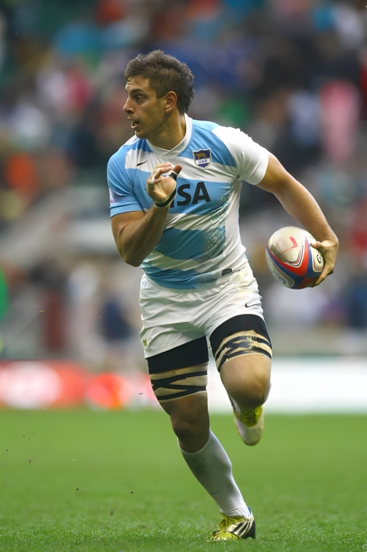

Gallery


BDR - Account Executive | Software & Data Enthusiast
After a successful period driving sales and client acquisition in Rome, I am now based in Madrid, combining my experience from professional sports and technology, which has given me a foundation of discipline ,teamwork , and analytical skills. Fluent in English, Italian, and Spanish, I thrive at the intersection of software sales, data, and innovation. I am committed to channeling my energy and experience to exceed expectations and drive growth for an innovative company
Email: nico.coronel@protonmail.com
Phone: +34 621 053 129
2024 · Oviedo
Attracting potential clients through impactful presentations that showcase the excellence of our UX/UI solutions, successfully closing sales, and supporting operations through accurate data entry and efficient ETL processes to enhance data-driven decision-making.
2023 - 2024 · Madrid
Responsible for researching, managing, and providing expert guidance on the purchase and sale of real estate, while also performing data entry and executing ETL processes to ensure accurate and streamlined data management.
2022 - 2023 · Argentina
Experience in the management, administration and advice of Life, Health, Civil and Automotive insurance.
2018 - 2020 · Rome
Personal Trainer, room instructor manager, and supervision of new clients.
2013 - 2023 · Italy · England · Spain · Poland
Highlights: Leadership & Teamwork: strategic decision-making, motivating teammates, clear communication, adapting to challenges.
Online · 2024
Madrid · 2024
Developed expertise in big data technologies, focusing on data processing, analysis, and management. Worked with large-scale datasets using advanced tools and frameworks for efficient data handling and decision-making.
Madrid · 2024
I gained expertise in data analysis, machine learning, programming (Python, SQL), data visualization, and ETL processes. I developed practical skills in handling complex datasets, building predictive models, and deriving actionable insights to solve real-world problems.
Online · 2023
Understanding macroeconomic principles: growth, inflation, unemployment, and monetary policies, and their impact on global and national economies.
2016 - 2017
Start-up focused on motivating healthy habits via a points-based rewards system.
Virtual assistant built with Streamlit & PostgreSQL, trained with intents and storing conversations.
Interactive charts from a PostgreSQL DB deployed on Render. Includes FAQs, message origin and destinations dashboards.
Interactive maps highlighting locations of volunteer programs and campsites. Each marker opens external info.
Console game to practice core Python: control flow, functions, I/O; roadmap to OOP & GUI next.